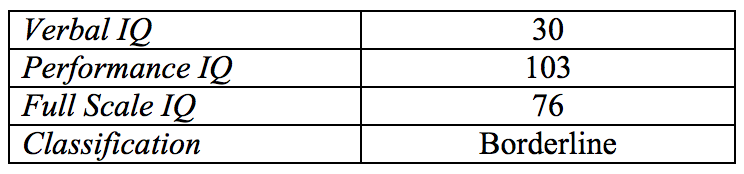

Name: Kate Davis
Age: 26
Date of Birth: 24th March 1976
Sex: Female
Educational Level: Year 6
Source of Referral: Dr. Brandon Estony
Reason for Referral: Psychological evaluation
Psychological ward for troubled children
Draw-a-person test
Social maturity test
Child intelligence test
22nd Dec 1986
24th Dec 1986
29th Dec 1986
30th Dec 1986
Dr. Alice McLennan - This young girl seems to be dealing with issues at home. As of now we are unaware of these issues, but hope to find them through conducting more tests. Although she seemed to be motivated to work at first she soon became easily put off by others, and therefore demotivated. She became easily frustrated when she was unable to do something. She preferred being by herself and working alone. Frequently comments include “who are you?” “Don’t touch me” and “I want to be alone”.
Kate was not able to respond to any part of the verbal test and in most parts of the performance test. She stared at the wall and appeared to be talking to herself. It was noted, however, that she could name familiar objects shown in pictures, such as man, woman, fox, elephant. Her verbal functioning is weaker than her performance functioning.
Socially, Kate is on the low level of maturity. Her social maturity, in terms of self-help, locomotion, and communication, is not within her age group. It was observed that she is still more comfortable alone and does not find it easy to start a conversion with another person. Kate is becoming more talkative each session. She mentions a friend of hers named Josie, Her parents do not know of a girl named Josie.
Kate’s cognitive functioning was found to be within the Borderline Level, having great difficulty in the verbal area than in the performance area. She was found to be talking to herself, which she claimed was ‘Josie’. She is often easily irritated and can sometimes shows aggressive behavior. Performs on a low level, non-typical of a 10-year-old child.
Shows serious signs of Paranoia and Schizophrenia.
1. Must be spoken to with care. 2. May be transferred to a special education program. 3. It is also suggested that her teachers be informed of her condition so that she may be given extra consideration in school.